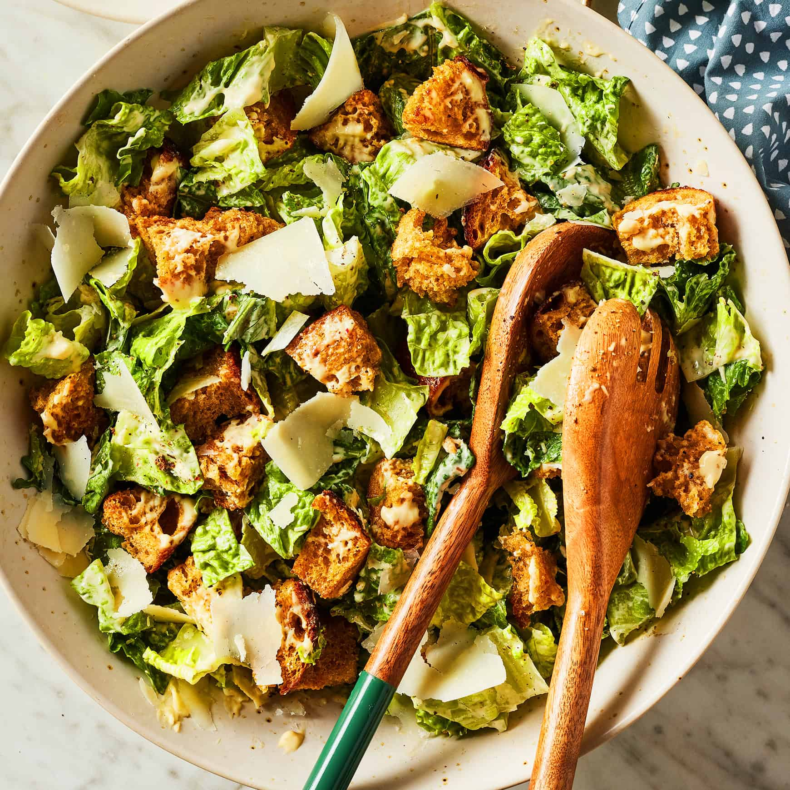

We're going to be making an all time classic salad dish, cesar salad with Odin's own twist. Odin's twist is using his own homemade dressing, which is made with a blend of olive oil, lemon juice, garlic, and anchovies. This salad is made by tossing fresh romaine lettuce with croutons, Parmesan cheese, and the homemade dressing, then garnishing with additional cheese and a sprinkle of black pepper.